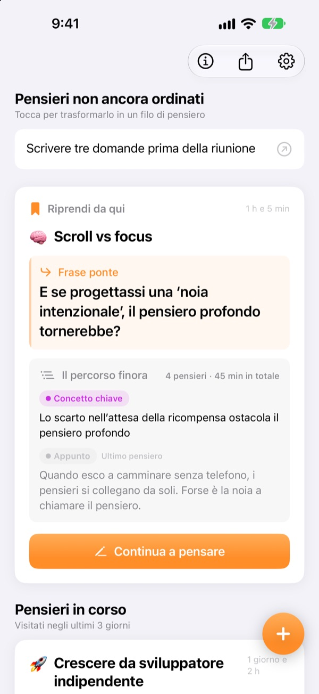
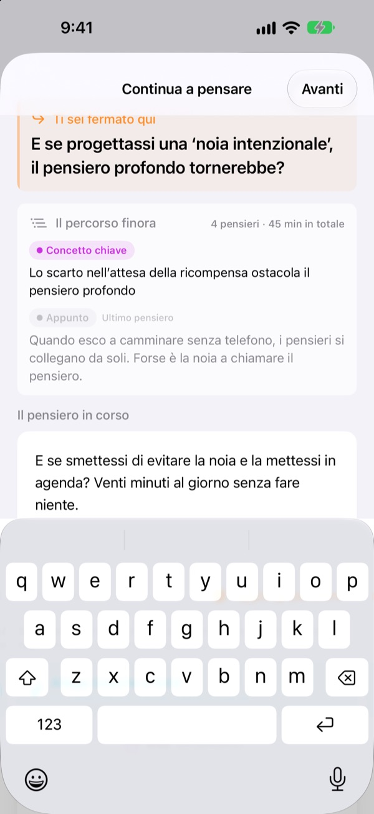
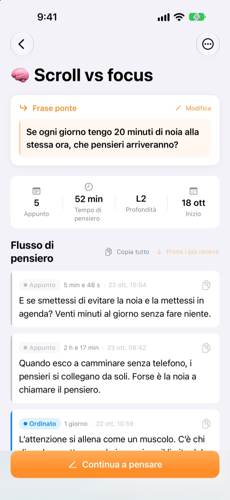
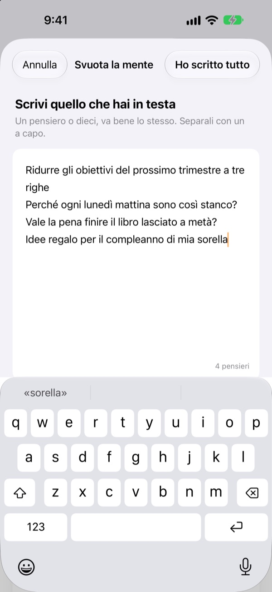

Il pensiero rimasto a metà ieri,
oggi riparte da lì
Quando smetti di pensare, lascia una riga da cui ripartire. La prossima volta che apri l’app, ti aspetta in cima.
Tutte le funzioni sono gratuite. Nessun account, tutto resta sul tuo dispositivo.

Prova a lasciare una frase ponte
Scrivi un pensiero e lascia la frase da cui riprenderai la prossima volta. I passaggi sono gli stessi dell’app.
Dov’ero rimasto?
Riapri un appunto di qualche giorno fa e trovi solo un paio di conclusioni, non la domanda che volevi approfondire dopo. E si ricomincia da capo. ThinkFlow ti fa lasciare quella domanda quando ti fermi, così al ritorno parti subito da lì.
La frase ponte ti aspetta in cima
Chiudi la sessione con una sola riga: la domanda da cui riprendere. Al ritorno, quella frase, i concetti chiave finora e l’ultimo pensiero stanno in un’unica scheda. Niente da ricostruire.
La vedi anche in un widget nella schermata Home e, mentre pensi, il tempo scorre nella schermata di blocco e nella Dynamic Island.

Dall’appunto al concetto chiave
Porta ogni pensiero su quattro livelli: appunto, ordinato, concetto chiave e riassunto. Vedi a colpo d’occhio quanto è maturato.
Ciò che hai cercato o chiesto si allega come riferimento, separato dai tuoi pensieri.

Prima, svuota la mente
Scrivi tutto ciò che ti frulla in testa, una riga per pensiero, e scegli quello su cui lavorare adesso: diventa un filo. Il resto aspetta nella schermata principale finché non lo tocchi.
I pensieri che non tocchi da più di tre giorni finiscono in Pensieri da riprendere.

Si parte in tre passi
- 1
Svuota la mente
Una riga per pensiero, poi scegli quello da far crescere.
- 2
Continua a pensare
Aggiungi ogni nuova idea a parte: dopo sarà più facile rifinirla.
- 3
Lascia la frase e chiudi
La prossima volta riparti da lì.
Livello di rifinitura
- Appunto
- Pensiero grezzo
- Ordinato
- Ordinato una volta
- Concetto chiave
- Solo l’essenziale
- Riassunto
- Riassunto finale
Tocca il badge del livello accanto a un pensiero per cambiarlo. Concetti chiave e riassunti compaiono per primi nella scheda al ritorno.
La frase ponte ti aspetta in cima
Devo per forza scrivere la frase ponte?
Se hai aggiunto qualcosa, sì: la schermata Continua a pensare si chiude solo dopo che hai lasciato la riga successiva. Se non hai scritto nulla, puoi chiuderla e basta. Il trucco è fermarsi quando hai ancora qualcosa da dire, non quando sei bloccato.
Cosa sono i Pensieri da riprendere?
I fili che non apri da più di tre giorni vengono raccolti a parte nella schermata principale, così anche un pensiero quasi dimenticato può ripartire dalla sua frase ponte.
Come segnalo un bug o propongo un’idea?
Usa Invia feedback nelle impostazioni dell’app, scrivi all’indirizzo qui sotto oppure apri una issue su github.com/M1zz/ThinkFlow/issues. Ogni messaggio è benvenuto.
È davvero tutto gratis?
Sì. Tutte le funzioni sono gratuite, senza pubblicità né account. «Sostieni lo sviluppatore» nelle impostazioni è facoltativo e non sblocca nulla.
Domande o suggerimenti? Scrivi a leeo@kakao.com.